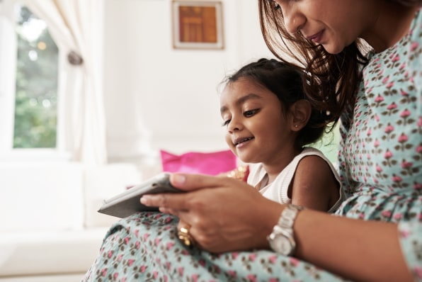

We asked hundreds of parents how they manage (and don’t manage) their kids’ screen time. The answers were candid, scary–and sometimes hopeful.

[Photo: Flickr user Hernán Piñera
By Kathleen Davis long Read
“I am tethered to my smartphone for both work and entertainment, as is my husband. It’s omnipresent and an extension of our bodies. Not wanting to be left out, my 16-month-old son takes the baby monitor, holds it in his hands, and peers at it like it is a smartphone. It is the cutest/most pathetic thing.”
That’s the eerie image a New York mom of two paints of her small child’s burgeoning tech addiction. Like most parents, that mom lives a waking life seeped in almost non-stop screen time (an average American adult spends about 11 hours a day looking at a screen). She, like many modern parents, sees her own tech dependency reflected in her children’s habits. She doesn’t always like what she sees.
Even as we learn about the potential pitfalls of our increasingly technology-addled lifestyles, our dependence on tech shows little sign of waning. Still, the anti-screen time drumbeat is getting louder, especially when it comes to kids.
In November, Chamath Palihapitiya, a venture capitalist who was an early employee at Facebook, said that the social network was “ripping apart the social fabric of how society works.” Tristan Harris, a former product manager at Google, told Wired that Apple, Google, Facebook, Snapchat, Twitter, and Instagram design products to “hijack” our time and attention. In January, two Apple investors asked the company to study the health effects of its products on children.
Then, last month, an unprecedented alliance of former employees from some the most powerful tech companies–including Apple, Google, and Facebook–formed the Center for Humane Technology. In partnership with the nonprofit media watchdog group Common Sense Media, the group plans to lobby against addictive tech, and is kicking off with a $7 million “Truth about Tech” ad campaign that they plan to deliver to 55,000 public schools.
Related: How Our Tech Addiction–And Constant Distraction–Is A Solvable Design Problem
That the very people who championed the technology to which we are addicted are now banding together to warn parents about the monster they’ve created is perhaps a sign that more people are starting to question tech’s outsized role in our lives. But it feels a bit farfetched that an ad campaign, no matter how well-intentioned, can really help curtail our society’s addiction–especially when kids these days are being introduced to screens at such a young age. In her book, The Art of Screen Time Anya Kamenetz cited a 2011 survey of 9,000 preschoolers (3- to 5-year-olds) that found that young kids spend about four hours a day in the company of (all types of) screens.
To find out what parents think about their kids’ use of tech, Fast Company surveyed nearly 400 parents. We tried to look at the issue from all angles, from the amount of screen time kids get to have, to the types of devices kids use, to parents’ regrets about their kids use of technology, to the benefits that technology can provide to families. We also asked parents how they feel about witnessing their own tech addiction reflected in their kids’ behavior. Those were, perhaps, the most telling answers of all.
The parents who answered our survey hail from all over the U.S. (and a few other countries). Their professions span many industries, including marketing, public relations, education, finance, therapy, video production, law, medicine, and business. Most participants have one or two children, ranging from 7 months to 18 years old. The majority of participants’ kids are between 3 and 11 years old; in other words, these parents are in the thick of parenting.
Obviously, this self-selected group of Fast Company readers isn’t a conclusive sample–but, along with expert research, these parents’ insights help provide a snapshot of the worries that burden parents in our tech-dependent era.

[Photo: Flickr user Ritesh Man Tamrakar]
Even if it involves lots of virtual interaction via social networks and texting, using a screen can be a pretty solo activity. Using smartphones, tablets, and even computers aren’t generally as communal as watching a TV with your family.
Related: A Smarter Way To Think About “Screen Time” And Kids’ Tech Use
TV has been around a long time. For many of us, it is the devil we know and, unlike other screened devices, it’s arguably easier for parents to know what their children are watching on TV than it is for parents to know what their kids are looking at on the internet. In fact, as crazy as it might sound, we’ve reached a point where some parents actually wish their kids were watching more TV.
“I would love them to watch TV, at least it is more social since they will watch it with their siblings or friends! I never thought I would ever be encouraging this, but [watching TV] is much better than being locked in your own room with your own iPhone having an isolated life,” wrote a London dad of three.
Meanwhile, many of our readers told us that they feel that tech has squashed their kids’ creativity–and turned them into little monsters.
“I purchased a tablet for my oldest child at the age of 9. She stopped using her imagination, she very abruptly stopped drawing, and very quickly it became a daily battle to limit her time on the tablet,” wrote an environmental biologist from Pennsylvania who has three kids.
A dad and executive from Chicago, also with three kids, interprets it this way: “[The] smartphone takes over a child’s daily consciousness. Natural[ly] voracious, inquisitive curiosity seekers slowly, invariably, and inevitably become young people indifferent to discovery in favor of scrolling. Smartphones numb creativity, intellectual critical thought, and social growth.”
[Photo: DragonImages/iStock]
A lot of parenting can be a battle of “do what I say, not what I do”–and nowhere is this more evident than in parents’ use of tech. Many parents in our survey said their device dependency makes them feel like hypocrites when they try to limit their kids’ tech use. “My main regret is how much we use phones in front of them,” wrote a mom of two from Minnesota who doesn’t allow any screen time for her two young children.
“I see myself reaching for my phone out of habit anytime I’m the least bit bored or have a moment to spare. I hate this, and yet can’t seem to stop myself. I figure at least my brain patterns were formed without this influence and am terrified of what growing up with smartphones and tech will do to my daughter,” wrote a New York City mom of a 1-year-old.
When kids get older, they relish calling their parents out on that hypocrisy. “Some apps and games can become a part of your life and routines to the point where they become an obsession. My kids call me out for being on my phone too much, and I have to pull myself out of it and show them how you can set limits with yourself and be present with the people in your life,” wrote a psychologist and New York mom of three.
“I asked my kids what they thought about smartphones. They said that they must be really important, because the adults looked at their screens all the time, and based on how frustrated adults got when kids interrupted them, they assumed the phones were more important than them, which was heartbreakingly sad to hear,” wrote an engineer and mom of two from New Hampshire.
Many parents who answered our survey said that having kids forced them to look more critically at how they use technology and caused these parents to make a conscious effort to change. “My wife and I have now made a pledge for complete ‘phone-free’ activity for ourselves from the time we arrive home from work until the children go to bed–no scrolling social media, no email checking,” wrote a Chicago dad of three.

[Photo: Flickr user Andri Koolme]
With a lack of solid national data on the effects of all this tech exposure on kids, parents definitely have a lot of concerns. In our unscientific survey, only a blissed out 1% of parents expressed no concerns about their kids’ use of tech.
For the rest of our participants, nearly everyone (over 80%) communicated concern about their kids becoming addicted and developing a shortened attention span (likely because the parents are experiencing these problems themselves). In our survey, addiction appears to trump the traditional things we were told to fear on the internet, like sexual predators and online bullying, which only concerned about half of parents who took part in our survey. And data privacy is only a concern for a little more than half of parents who took part in our questionnaire.
“It’s definitely addictive behavior. And behavioral change is real. Wonder what damage was done during a more permissive period that we can’t now undo,” wrote a mom of two from Massachusetts of kids’ device habits.
A New York mom of two describes the compulsive behavior she witnesses in her daughter. “Monitoring screen time is exhausting and virtually impossible. My 12-year-old daughter checks her phone constantly; she doesn’t even know she’s doing it.”
Related: Why Your Free Time Probably Shouldn’t Be Screen Time
These parents’ concerns are backed up by research. A 2016 survey from Common Sense Media found that 78% of teenagers check their devices at least hourly, and half said that they thought they were addicted to their phones. There is a lot of debate, however, over whether it is possible to truly be addicted, in the clinical sense, to technology.
[Photo: Flickr user Rafiq Sarlie ]
Some experts like Nicholas Kardaras, PhD, author of Glow Kids: How Screen Addiction Is Hijacking Our Kids, believe categorically that the behavior some kids and adults exhibit falls into the realm of addictive behavior. In an interview for NPR with Kamenetz, he points to brain-imaging studies that show the effects of screen time, and points to the many teens he has treated who get so wrapped up in video games that they don’t even get up to use the bathroom. To hear Kardaras tell it, the evidence of technology’s addictive nature is obvious.
Kamenetz and Ana Homayoun, author of Social Media Wellness: Helping Teens and Tweens Thrive in an Unbalanced Digital World , take a more cautious stance. Homayoun calls it “problematic overuse.” “I think that covers a broader range of situations that you can deal with earlier,” she explains. “Tech doesn’t have the same impact as something like opioids.” She says that the signs of problematic overuse are similar to the traditional signs of addiction, like withdrawing from friends and activities or becoming angry or violent when the phone is take away.
Her solution? A digital detox: a family vacation over a long weekend to a place without Wi-Fi. “It helps them get over the hump, and they come back with a different relationship to it. They have to get through that initial anxiety and through the other side.”
[Photo: Flickr user K.W. Barrett]
A constant refrain in our survey was how the near total saturation of tech in schools made the entire idea of “screen time” much more nebulous. After all, many schools (especially in more affluent districts) have introduced a one-to-one program for kids with tablets or Chromebooks, some starting in elementary school. Kamenetz points to research that has shown that kids actually learn better in classrooms where two or three kids have to share each device because that forces them to collaborate.
Related: Can Techie Parents Reinvent School For Everyone–Or Just Their Rich Kids?
But regardless of kids’ use of tech in the classroom, nearly all kids are required to check or complete their homework online, which means that they will spend some of their time at home online. Several parents in our survey feel like this means that putting limits on screen time is out of their hands. “When the schools provided them with personal Chromebooks, it become impossible to monitor or regulate what they were doing online,” wrote a Minnesota dad of two.
“I think schools have generally done a poor job of educating parents on tech-related topics, and many parents aren’t aware of tools and strategies that they can employ to give their kids some structure when using tech,” wrote an Illinois mom of two teens. Homayoun agrees with some of those concerns. She says that in many cases, schools rush to put technology in place without thinking about how it might impact kids.
The way Homayoun sees it, the big missing skill is time management. “The same tool that they need to use to complete their work is the same thing that’s distracting them from getting work done,” she says of these digital devices. Homayoun delivers school orientation programs to teach parents, teachers, and students how to self-regulate and stay motivated. She believes that setting limits on how long kids can be on devices, even if they are using them to do homework, helps kids stay on task. Time management and distraction are issues that adults deal with daily–both at work and in their personal lives. So Homayoun urges parents to approach their kids’ struggles with device management from a place of empathy.
Most of the parents who answered our survey don’t use parental controls on all the devices that their kids use. Sometimes this led to frightening results, as one parent wrote: “I wish I was more ahead of the game on knowing how to block certain sites. My sweet innocent daughter was accidentally exposed to soft-core porn when looking for Barbie princess videos online.”
Parents might be skipping out of the parental controls because they don’t trust them. As Homayoun points out, “Kids are smart and can find ways around them.” She advises that rather than blocking or banning certain sites or apps, parents should work to understand what their kids are using and have a conversation with their children about their goals in visiting the sites.
That said, Homayoun recalls that many of the teens she works with confess that they actually wish their parents would put more limits on their tech use by doing things like not allowing them to use their phones in their bedrooms at night (something adults should also be doing to get more sleep).
[Photo: Flickr user Marvin Girbig]
If there is one overarching theme to our survey and all of the current research around kids’ use of tech, it’s this: We still don’t know.
Victor Strasburger, coauthor of the American Academy of Pediatrics’ guidelines for children’s use of media and technology , admitted to Kamenetz that because of the lack of research, “We have no good idea about what the media diet should be if you include computer time, smartphones, iPads, that sort of thing. Maybe it’s four or five hours a day. Maybe computer time for homework shouldn’t count, or does count. We simply don’t know.”
And that’s really the bottom line to this thorny conversation. Technology has changed so rapidly in just the last 15 years, let alone since the time today’s parents were kids themselves. Screen time often feels like the new sugar: We fear it’s rotting our kids’ insides. And while it’s true that we need more research to really understand how screen time is affecting kids’ brains, Kamenetz asserts that tech isn’t an unknown toxin doing invisible damage to kids. She believes that the negative effects of technology are things parents can see, and that parents can apply common sense in order to figure out how to mitigate the problems.
Like most things in life, the solution might just be moderation. It may seem like we are at a point of no return, but some families are finding their way back, like this designer from Seattle who is a dad of four. He wrote of his family, “For years, we were undisciplined [about] screen usage. They were more tired, more moody, and generally less willing to engage in normal childhood play. Now that we have seen those effects and pulled the screens away, they are more engaged with each other, with us, their imagination has come back dramatically, and the more analog life has also become exciting again.”
This is the approach Kamenetz recommends in her book. She says, “We don’t have a set of solidly evidence-based recommendations that say, ‘Healthy screen time looks like this.’ But I’ve come up with my own take on Michael Pollen’s famous maxim: “Enjoy screens. Not too much. Mostly with others.”
And like any other behavior parents hope to impress on their kids (manners, healthy eating habits, volunteering), parents’ actions make a much bigger impact than their words.
[Photo: Flickr user ND Strupler]
Of course, not all tech use falls into the mindless games and social media camp. As many parents pointed out, aptitude with technology is a crucial skill for kids to succeed in school and in later careers.
To that end, some of the parents helped get their kids excited about being engaged with tech by sharing what they were doing when they were staring at a screen. “I think her interest in technology stems from me working with technology so closely. I’m always on my phone or computer. I make it a point to explain what I am doing on the phone or computer, and allow her to ask questions,” wrote a Palo Alto-based brand marketer and dad of a 5-year-old.
“The need to understand how to use technology and navigate the tech world–this is not going away. It’s how they are learning in school and it’s the workforce they’ll one day join. We are pushing STEM on our kids, yet we freak out about them using technology and how it’s ruining their childhood,” pointed out a Kansas City PR manager and mom of two.
The bulk of the conversations around kids and tech is about the dangers of addiction, shortened attention spans, privacy, online bullying, depression, and lack of empathy. But the saturation of technology in kids’ lives is helping them in ways that weren’t possible a generation ago. Look no further than the Parkland, Florida, teenagers who are using their social media savvy to force a national conversation about gun control.
Related: A 14-Year-Old Made An App To Help Alzheimer’s Patients Recognize Their Loved Ones
The parents in our survey pointed to many other tangible benefits. “My children can watch videos and listen to music from anywhere in the world, listen to experts talk about their given fields, learn how to code, learn another language, the list goes on. None of that was available to me as a child. My mom’s encyclopedia set was all I had. Australia was a 4-by-6-inch black and white picture in a book. The other day, my children Skyped with my brother who now lives there, and they took a tour of Sydney, all from their phones,” explained a Mississippi mom of four. “When used the right way, technology can bridge gaps to provide information to anyone, regardless of demographics.”
I’m at the beginning of my parenting life. My son isn’t even 2 years old. Who knows what tech we’ll be worried about by the time he’s in high school, or what his concerns will be when he becomes a parent. Like the parents in our survey, my plan is to give him the tools he’ll need to succeed, and teach him the best way to use them. And for now, I make sure that I save my email checking for after he goes to bed.
Kathleen Davis is Deputy Editor at FastCompany.com, she also manages the leadership and work-life section. Previously, she has worked as an editor at Entrepreneur.com, WomansDay.com and Popular Photography magazine. More
Survey: Parents are more worried about tech addiction than online predators
Working moms can all relate to NYT’s Sheera Frenkel’s Twitter thread